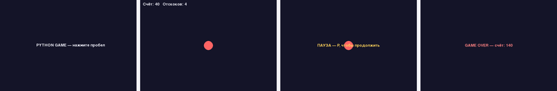

Состояния игры
Меню, геймплей, пауза и game over — это разные состояния игры, и код должен явно знать, в каком из них находится прямо сейчас.
Уже сейчас у ваших проектов есть как минимум одно неявное состояние — «игра идёт». На практике почти любая игра проходит через несколько чётко различимых состояний, и в каждом из них ведёт себя по-своему.
Состояние как перечисление
Знакомый по главе 19 приём — хранить текущее состояние как значение
enum.Enum (глава 18), а не как несколько независимых булевых
флагов вроде na_pauze и igra_okonchena
по отдельности. У перечисления невозможно оказаться сразу в двух состояниях одновременно —
у отдельных булевых флагов такая ошибка возможна совершенно случайно:
from enum import Enum, auto
class SostoyanieIgry(Enum):
MENU = auto()
IGRA = auto()
PAUZA = auto()
GAME_OVER = auto()
tekushee_sostoyanie = SostoyanieIgry.MENUПереходы между состояниями
Состояния этой мини-игры образуют не прямую линию, а граф: из PAUZA
игра возвращается обратно в IGRA, а не идёт дальше
вперёд, и то же самое с возвратом из GAME_OVER в
MENU. Явный список разрешённых переходов надёжнее рисовать
таблицей «откуда → куда», где у каждой строки есть свой, ничем не перепутанный триггер:
| Из состояния | В состояние | Когда |
|---|---|---|
| MENU | IGRA | нажали «Играть» |
| IGRA | PAUZA | нажали паузу |
| IGRA | GAME_OVER | столкновение / поражение |
| PAUZA | IGRA | нажали паузу ещё раз (снять с паузы) |
| GAME_OVER | MENU | нажали «Заново» |
Важно, что не каждый переход разрешён: из MENU нельзя
напрямую попасть в GAME_OVER, минуя саму игру, и из
PAUZA нельзя попасть в GAME_OVER
напрямую — сначала игра обязана вернуться в IGRA. Код, который
обрабатывает ввод и обновление, должен явно проверять текущее состояние, прежде чем
выполнять действия, разрешённые только в нём — это ровно то же самое, зачем в главе 19
понадобился явный GameStatus для змейки.
